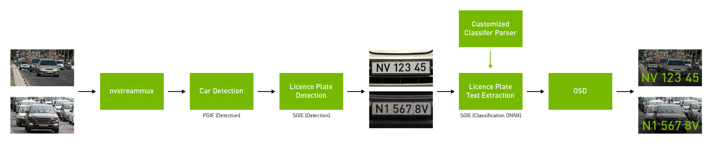

Welcome to the Automated License Plate Recognition (ALPR) Tutorial
This tutorial provides an in-depth look into Automated License Plate Recognition (ALPR) systems, their underlying technologies, and applications in real-world environments.
Live Demo
What is ALPR?
ALPR (Automated License Plate Recognition) is a technology that uses image processing and Optical Character Recognition (OCR) to detect and recognize vehicle license plates. ALPR is widely used in traffic management, toll collection, law enforcement, and parking systems.
How Does ALPR Work?
An ALPR system typically follows these steps:
- Image Capture: High-resolution cameras capture images or video streams of vehicles.
- Preprocessing: The images undergo noise reduction and grayscale conversion to enhance clarity.
- License Plate Detection: Using algorithms like contour detection, the region of the license plate is identified.
- Character Segmentation: Characters on the plate are segmented using thresholding techniques.
- Character Recognition: Optical Character Recognition (OCR) tools like Tesseract are used to recognize the characters on the license plate.
Character Recognition in ALPR
Character recognition is a vital component of Automated License Plate Recognition (ALPR) systems, enabling the conversion of images of license plate characters into machine-readable text using Optical Character Recognition (OCR). Here’s a concise overview of the process:
1. Image Acquisition
- Camera Capture: High-quality images of vehicles are captured using visible light or infrared cameras.
- Preprocessing: The captured image is converted to grayscale, noise is reduced, and edge detection is applied to enhance clarity.
2. License Plate Detection
- Contour Detection: Edge detection identifies contours that may correspond to a license plate, filtering based on shape and size.
- Segmentation: The detected plate is cropped from the background for further processing.
3. Character Segmentation
- Thresholding: The segmented plate image is converted to a binary format to isolate individual characters.
- Bounding Boxes: Each character is enclosed in a bounding box for recognition.
4. Character Recognition Using OCR
- Feature Extraction: The OCR engine analyzes pixel patterns within each character's bounding box.
- Pattern Recognition: Extracted features are compared against a database of known characters using machine learning algorithms.
- Post-processing: Error correction techniques improve accuracy by applying rules based on expected license plate formats.
5. Challenges
- Lighting Variability: Changes in light can affect recognition accuracy.
- Motion Blur: Fast-moving vehicles may lead to unclear images.
- Non-Standard Fonts: Variations in font styles can complicate recognition.
6. Advanced Techniques
- Deep Learning: Utilizing Convolutional Neural Networks (CNNs) for enhanced feature learning and improved recognition accuracy.
Challenges in ALPR
Despite its widespread use, ALPR faces various challenges:
- Poor lighting conditions (nighttime, shadows, etc.)
- Motion blur caused by fast-moving vehicles
- Non-standard license plate designs
- Weather-related issues like rain, fog, and snow
Applications of ALPR
ALPR is widely implemented in the following areas:
- Law Enforcement: Tracking stolen vehicles, identifying toll evaders, etc.
- Parking Management: Monitoring the entry and exit of vehicles in parking lots.
- Toll Collection: Automatically charging vehicles that pass through toll booths.